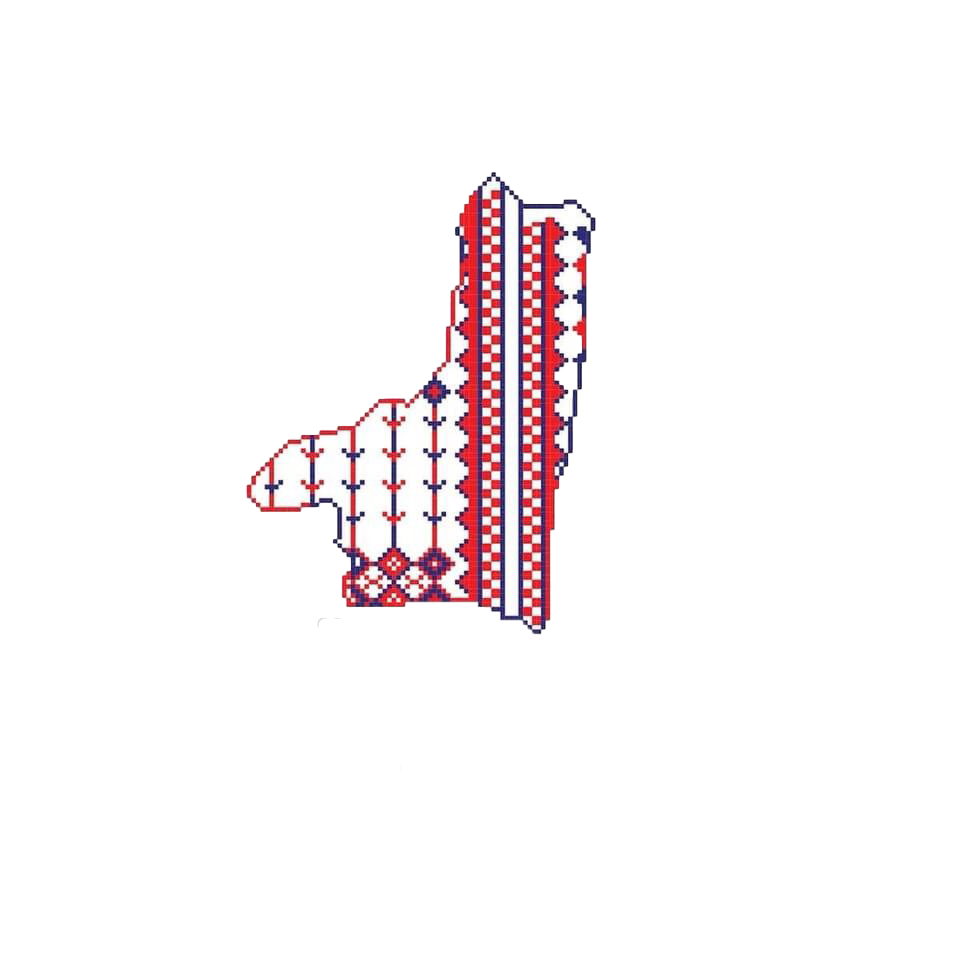

⬅ "back to the home page"

مميزات تطريز صفد والجليل
① الألوان
- الأخضر—رمز للطبيعة والزراعة.
- الأحمر—لون تقليدي قوي.
- الأزرق—مستوحى من السماء والبحر القريب.
- الأسود—لتحديد النقوش وإبراز التباين.
② الغرز
- غرزة الفلة (الصليب) للنقوش الكبيرة.
- غرزة السلسلة لإطارات القماش والحواف.
- غرزة النقاط للتفاصيل الصغيرة والزخارف الدقيقة.
③ الرموز الشائعة
- الزهور البرية : ترمز للجمال والحياة الطبيعية.
- الطيور الصغيرة: ترمز للحرية والبهجة.
- الأشكال الهندسية المكررة: مستوحاة من العمارة التقليدية والبيوت القديمة.